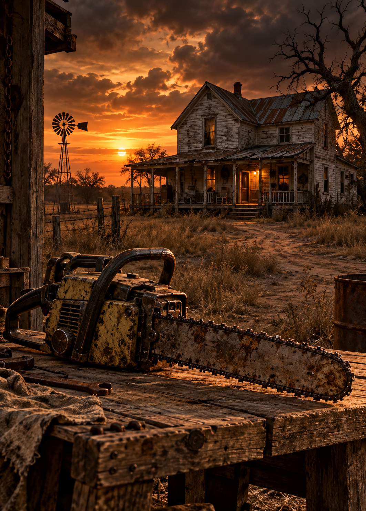

Massacre à la tronçonneuse
1974
Réalisé par Tobe Hooper
1h 23min
Sally Hardesty, son frère Franklin et leurs amis traversent le Texas pour vérifier la tombe de leur grand-père. Leur voyage les conduit près d'une vieille propriété familiale et d'une maison isolée.
En cherchant de l'aide, ils rencontrent Leatherface et les membres de sa famille. La promenade se transforme en lutte pour échapper à un piège terrifiant.
Distribution
| Acteur | Rôle |
|---|---|
| Marilyn Burns | Sally Hardesty |
| Gunnar Hansen | Leatherface |
| Paul A. Partain | Franklin Hardesty |
| Acteur | Rôle |
|---|---|
| Allen Danziger | Jerry |
| Jim Siedow | Drayton Sawyer |
| Edwin Neal | L'auto-stoppeur |
| Teri McMinn | Pam |
| William Vail | Kirk |